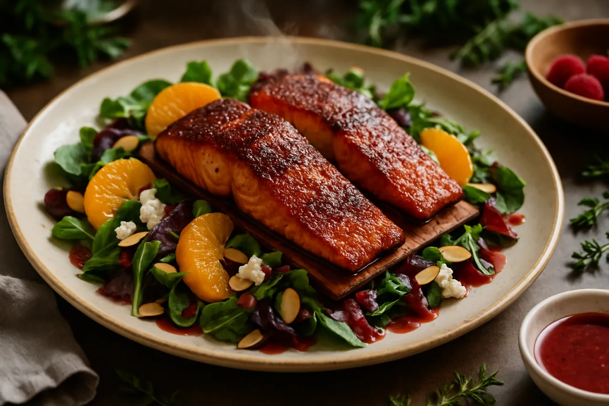

Cedar Plank Brown Sugar Salmon Salad with Raspberry Vinaigrette
Brown-sugar-and-ancho crusted salmon smoked on a cedar plank over mixed greens, orange, goat cheese, and almonds in raspberry vinaigrette.
Open recipe →
Brown-sugar-and-ancho crusted salmon smoked on a cedar plank over mixed greens, orange, goat cheese, and almonds in raspberry vinaigrette.
Open recipe →